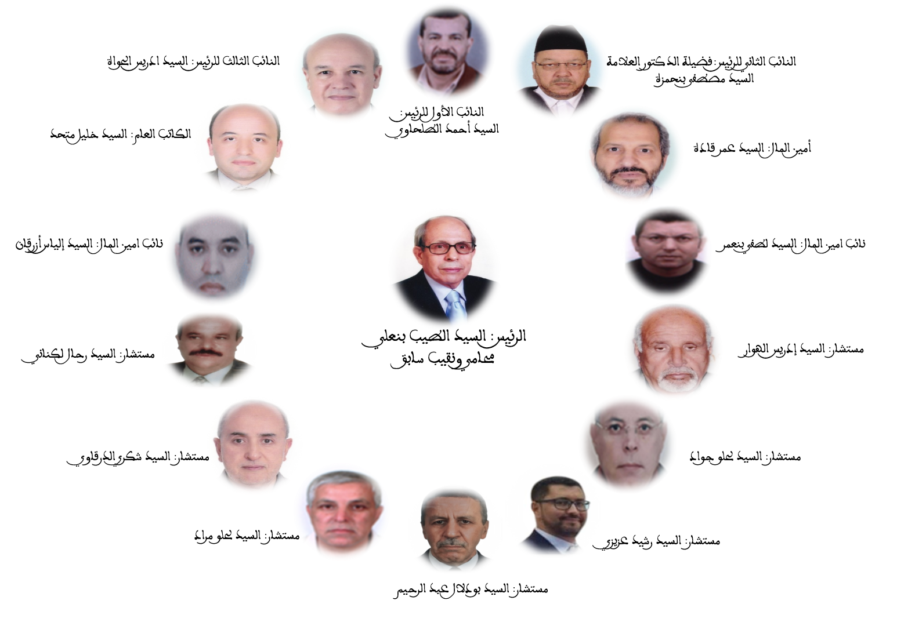
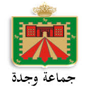
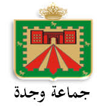

0
سنة من العطاء
عطاء يمتد لأكثر de 95 عاماً في خدمة المجتمع
نحن جمعية غير ربحية تأسست عام 1928، نهدف إلى تعزيز التنمية المجتمعية والمساهمة في تحسين ظروف الحياة للفئات الهشة. نسعى لتوفير الرعاية والتأطير والتكوين للمستفيدين والعمل على إدماجهم اجتماعياً واقتصادياً.
جمعية ذات منفعة عامة بمقتضى مرسوم: رقم 2.12.133 صادر في 29 من ربيع الآخر (22 مارس 2012).
تأسست الجمعية الخيرية الإسلامية في سنة 1928 على يد المرحومين السيد إدريس احساين والسيد علي بن رحال، حيث كان مقرها الأول بدار الشيخ علي الموجودة بحي أحراش بالمدينة القديمة، وكان عدد النزلاء آنذاك 10 مستفيدين فقط.
انتقلت الجمعية في سنة 1932 إلى قيسارية الحبوس، لتأوي ما يزيد على 40 نزيلا. ومع تضاعف العدد، انتقلت في سنة 1934 إلى طريق بوقنادل بعد تفويت قطعة أرضية من طرف المجلس البلدي، وتم توسيعها لاحقاً بهبات من وزارة الأوقاف، ليرتفع عدد المستفيدين إلى ما يفوق 400 نزيل.
حظيت الجمعية باهتمام بالغ من شخصيات وطنية، أبرزها زيارة المغفور له محمد الخامس طيب الله ثراه في 24 يونيو 1943، والذي قدم هبة مالية ملكية للجمعية سنة 1956. كما شهدت الجمعية زيارة جلالة الملك محمد السادس نصره الله لدار المسنين في 21 دجنبر 1999، وتقديمه لهبة ملكية كريمة سنة 2003.
إن أهم ما يميز الجمعية الخيرية الإسلامية هو محافظتها على جموعها العامة بصفة منتظمة، ليصل عدد المكاتب الإدارية الذين تعاقبوا على تسييرها منذ سنة 1928 إلى 24 مكتب، وتداول على رئاستها 15 رئيساً، وجميع هذه المراحل موثقة ومحفوظة لدى إدارة الجمعية.
تشرف الجمعية على عدة مؤسسات خيرية تهدف إلى رعاية الفئات المستهدفة.
تتكون الجمعية من مجموعة من الأساتذة والمهنيين والمحسنين الذين يكرسون جهودهم لخدمة المجتمع ودعم الفئات المحتاجة.
نقدم مجموعة متنوعة من الأنشطة التي تهدف إلى الدعم النفسي، التربوي، الاجتماعي والترفيهي.
دروس الدعم وأنشطة تطوير المهارات التعليمية.
جلسات دعم نفسي وتطوير الذات للأطفال والمراهقين.
ورشات فنية، رحلات ثقافية ومسابقات رياضية متنوعة.
حملات توعية وورش تربوية لتنمية المهارات الحياتية.
اهم الاحداث والزيارات عبر التاريخ التي مرت بها الجمعية منذ التاسيس الى يومنا الحالي


التعاون الوطني، مؤسسة محمد الخامس للتضامن، المبادرة الوطنية للتنمية البشرية،مجلس الجهة و المجلس البلدي ومجموعة من المحسنين المحليين ومن خارج الوطن.
 

نحن هنا للاستماع إليكم والإجابة على استفساراتكم وملاحظاتكم. دعمكم يهمنا!